Capturing
the Circuit
A step-by-step guide to building your 555 timer servo control circuit in Tinkercad.
This is your starting point.
A blank breadboard with all the components you need ready to place. Get familiar with the layout before connecting anything.
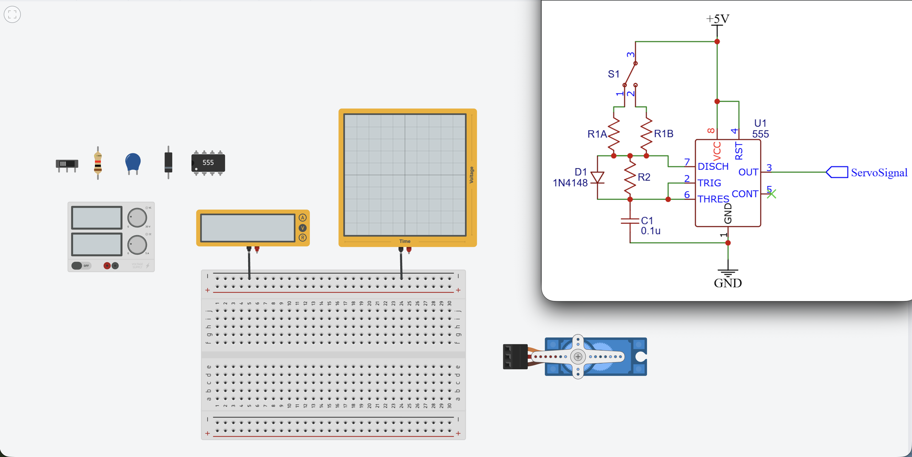
Place the 555 chip in the center of the breadboard.
Pin numbering: the white dot marks pin 1. Pins 2 through 8 continue counter-clockwise around the chip.
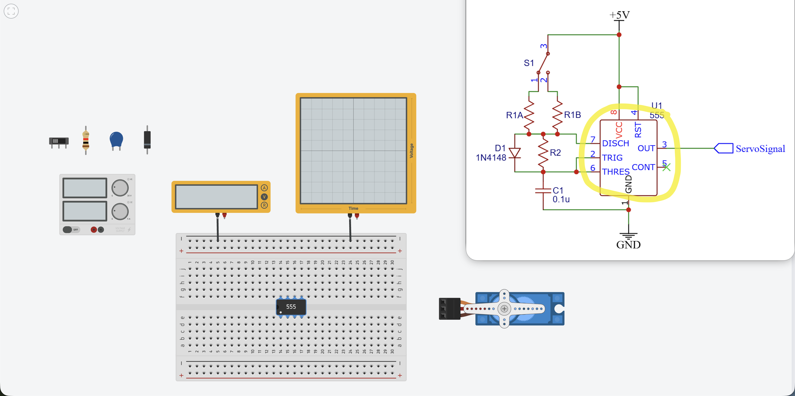
Connect 5V to the positive bus.
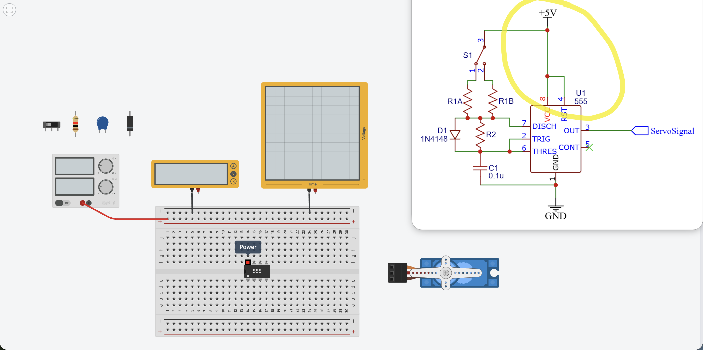
Connect the positive bus to pin 8 of the 555 (power pin).
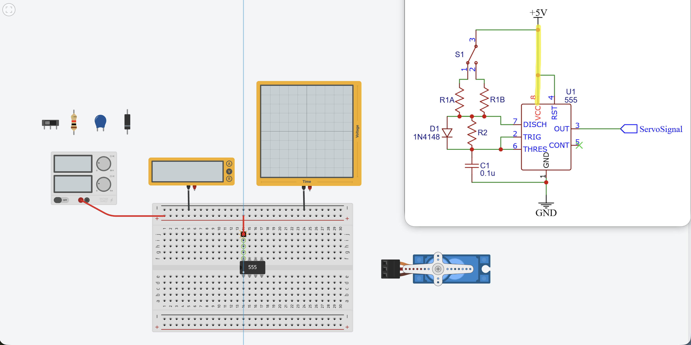
Connect the top and bottom positive buses together.
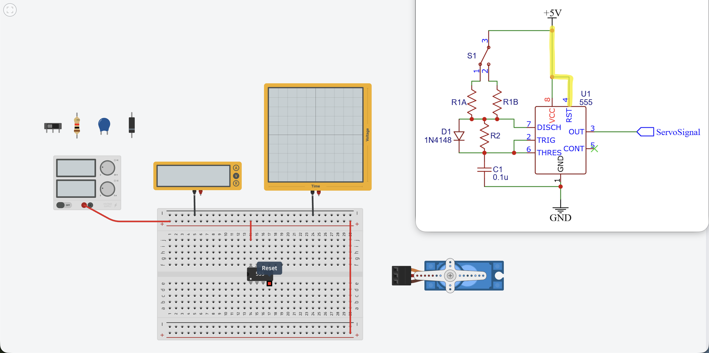
Connect the bottom positive bus to pin 4 of the 555 (reset pin).
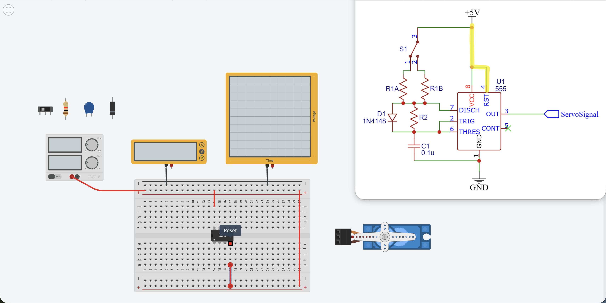
Connect ground to the negative bus.

Connect the top and bottom negative buses together.
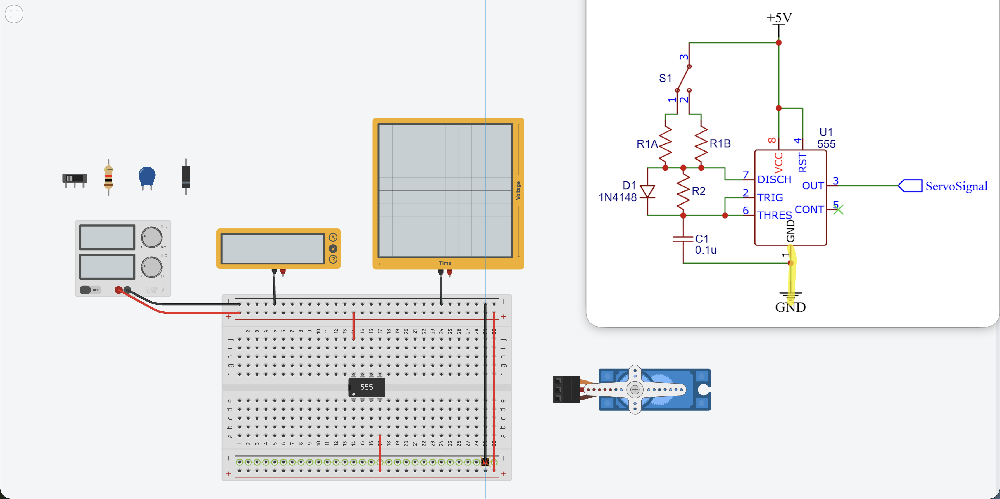
Connect the negative bus to pin 1 of the 555 (ground pin).
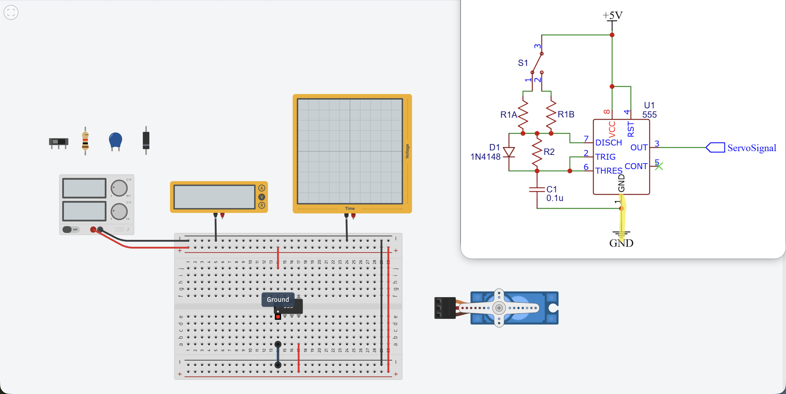
Add capacitor C1 between pin 1 and pin 2 of the 555.
Click C1 to open its properties and enter the capacitance value (0.1μF).
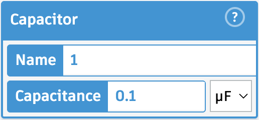
Add diode D1: connect the unmarked (anode) side to pin 7 of the 555.
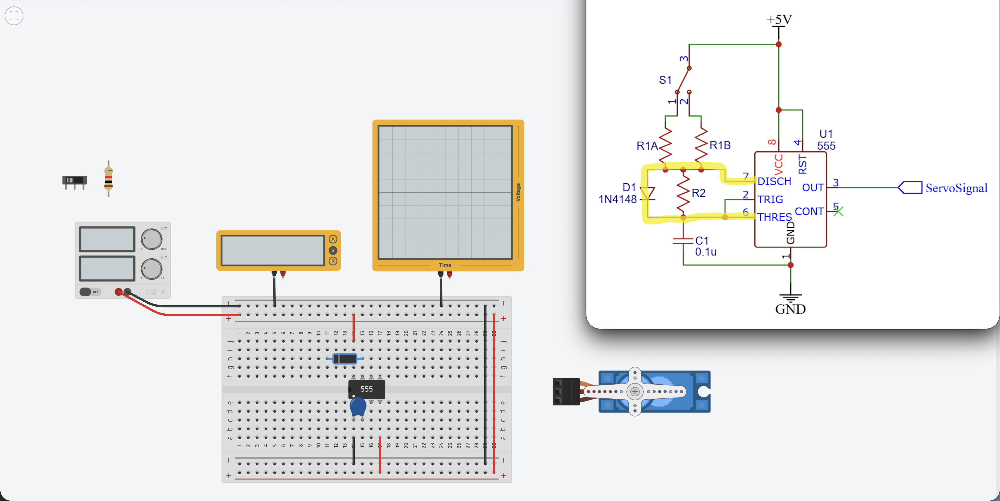
Connect the marked (cathode) side of D1 to pin 6 of the 555 with a wire.
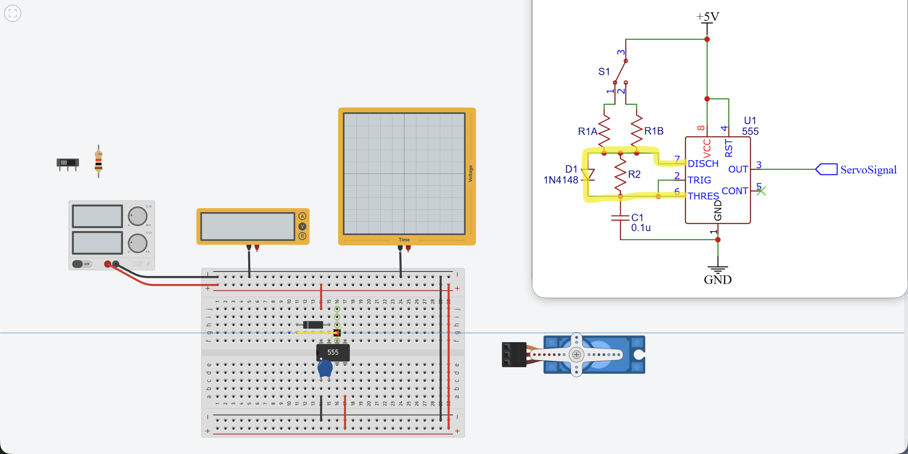
Add R2 in parallel with D1.
R2 and D1 are in parallel. R2 sets the discharge time t2 when the capacitor discharges through it toward pin 7.
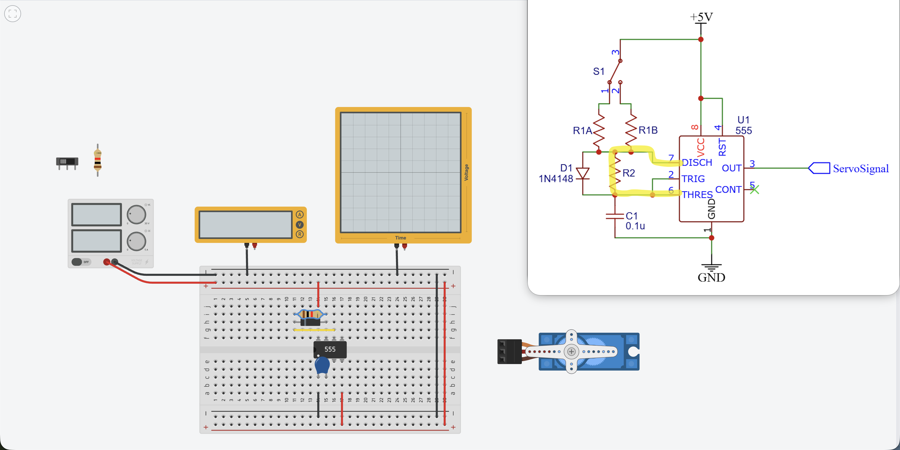
Connect pins 2 and 6 of the 555 together with a wire.
Tying the threshold (pin 6) and trigger (pin 2) together creates the oscillator feedback loop.
Add switch S1 in the empty space on the left side of the breadboard.
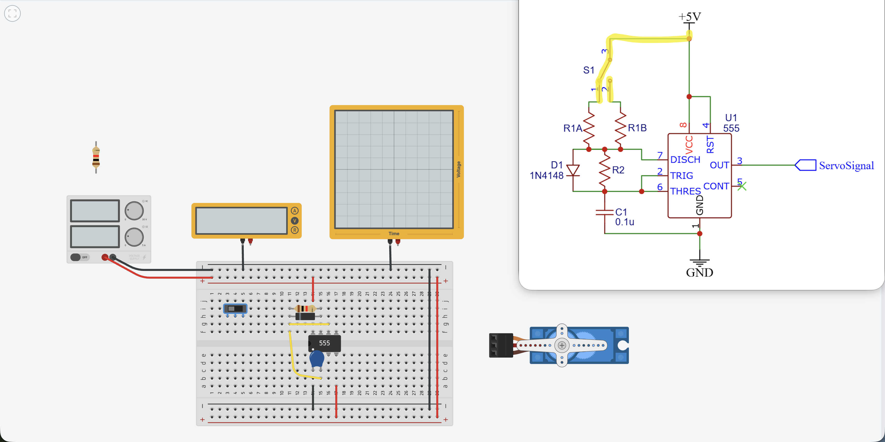
Connect the common pin of S1 to the +5V bus.
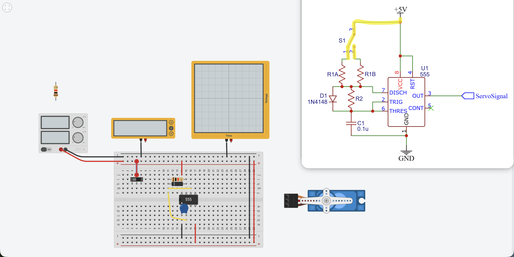
Add R1A: connect one end to terminal 1 of S1, bridging across the center gap to the bottom half of the breadboard.
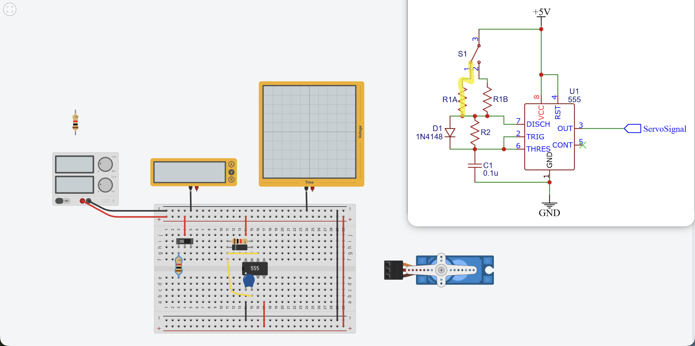
Add R1B: connect one end to terminal 3 of S1, bridging across the center gap to the bottom half of the breadboard.
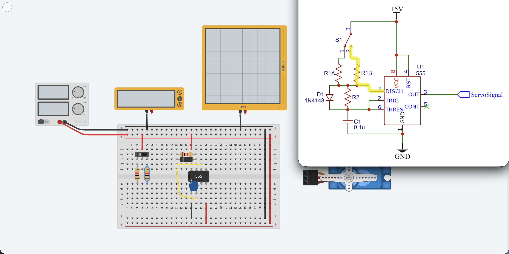
Run a wire from the far end of R1B to pin 7 of the 555.
Run a wire from the far end of R1A to the junction of R1B and pin 7.
Both R1A and R1B now meet at pin 7. Switching S1 selects R1A or R1B, changing the charge time t1.
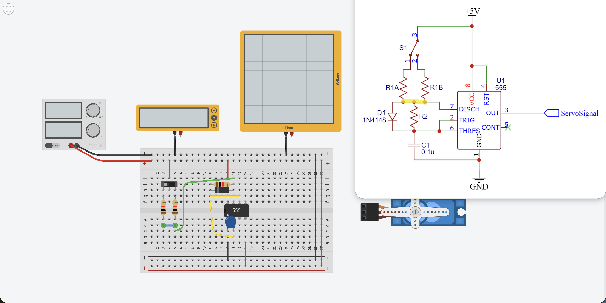
Run a wire from pin 3 of the 555 to an open column on the right side of the breadboard.
Pin 3 is the output pin. This wire will carry the PWM signal to the servo control input.

Connect +5V to the column just to the right of the pin 3 wire.
Connect ground to the column just to the right of the +5V column.
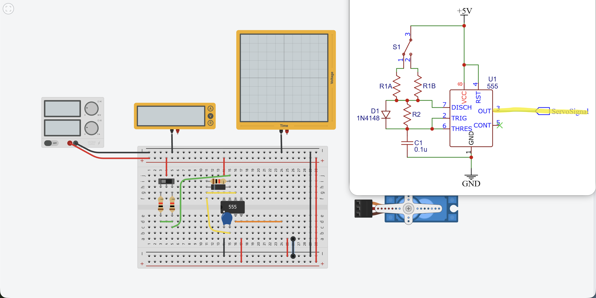
Plug the servo connector into these three columns: control, power, and ground.
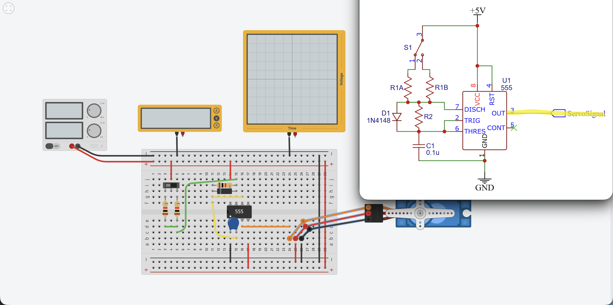
Connect the positive probe of the oscilloscope to the servo control wire to monitor the PWM signal.
Run the simulation and press the switch. You should see the pulse width change on the scope when you press and release S1.